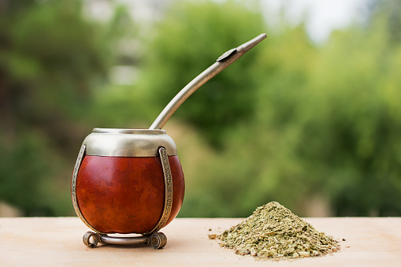
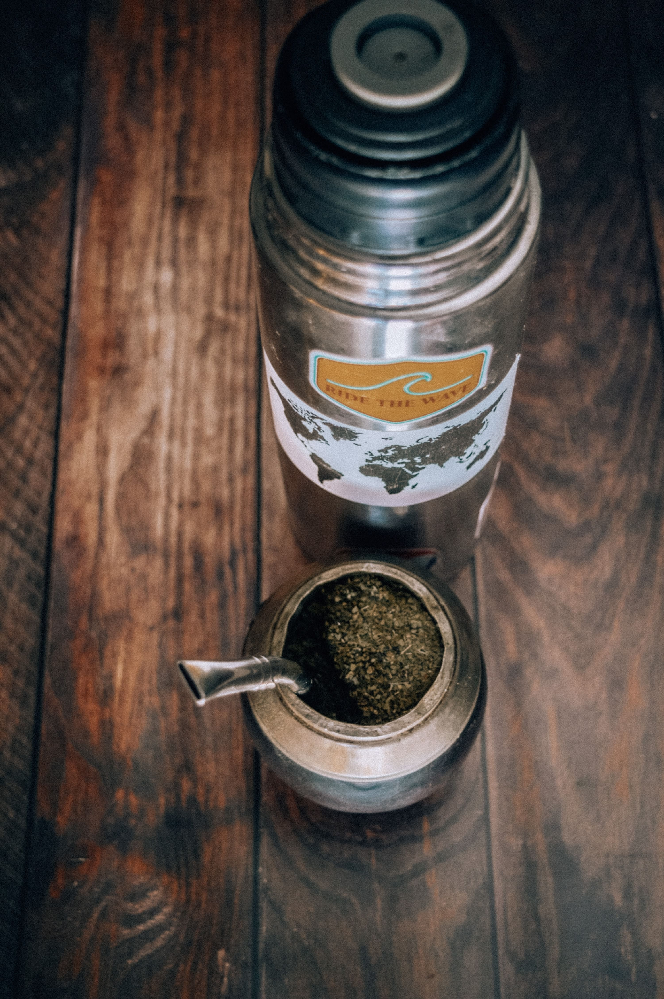
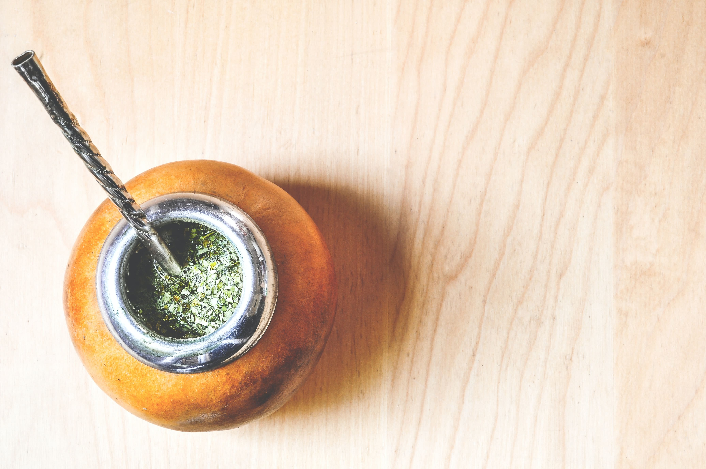

Mates
El mate es una infusión hecha con hojas de yerba mate (Ilex paraguariensis), planta originaria de las cuencas de los ríos Paraguay y Paraná. Estas plantas previamente secadas, cortadas y molidas forman la yerba mate, la cual tiene sabor amargo debido a los taninos de sus hojas. Por esto, hay quienes gustan de endulzar un poco el mate con azúcar, stevia o endulzante no calórico, pero comúnmente se toma amargo.
La espuma que se genera al cebar se debe a los glucósidos que la yerba mate contiene.
Tradicionalmente, se bebe caliente mediante un sorbete denominado bombilla colocado en un pequeño recipiente, que es denominado según la zona: mate, cuia, porongo o guampa.
Tipos de Mates


